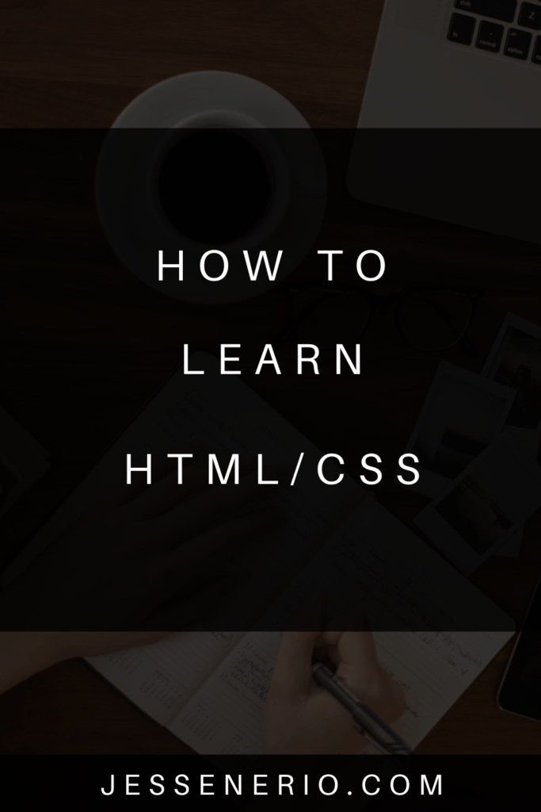

HTML/CSS are essential tools for anyone. Anyone. We are not talking about programmers. Everyone should know how CSS & HTML intermingle for the basic construction of a webpage.
This is equivalent to being a scribe in 600AD. If you know it, you are just a little bit more rare. But, just like the people of 600AD with basic writing, most people today don't realize how essential HTML/CSS are for just being literate.
We are talking about just reading & writing English on the internet. Do you know how to write English on an interactive document? If you don't, you better learn. Scribes are becoming commonplace today. Everyone is becoming literate and if you are not, you are falling behind. This is not 600AD anymore.
Anyway, I don't mean to be harsh, that is just my opinion when someone tells me they don't know how to write out a web page. But, I am of the opinion that everyone should at least know programming fundamentals and a little bit of one programming language, even physicians and carpenters. These things form the foundations of how the modern world works and we have to know it to perform our best.
The Step-by-Step System I Propose
Today I will show you how to learn HTML/CSS both for beginners and intermediates. If you already are a master of HTML/CSS (and many think they are when they are not) this is a great reference in showing someone else how to master the markup language and stylesheet.
So, firstly, HTML & CSS intermingle to create documents that are interactive. On the internet, these documents are delivered on a browser and are called a "webpage". These documents have interactive text which we call hypertext and it is just a combination of HTML & CSS.
Literally you are reading the modern book. These web pages are just part of an interactive book(website) you are reading. What I recommend in learning the actual code involved is balancing understanding how the language works, your theory knowledge, and implementing exercises or a small project, cycling between the two.
Typically a monolithic course will take care of this with a code along and exercises. While you are learning the theory take notes and use those notes in your implementation.
Let me give you some steps for this:
For Beginners & Intermediates:
- Download a note-taking app, try Codex: Create a reference manual as you learn theory
For Beginners:
- Study a monolithic course: Do the exercises during the course and make a reference manual out of the lectures & exercises. The one in this bullet is just an example, there are others out there. You may need extra practice, so you can fulfill this with either a high quality course or a series of implementations while studying.
- Use this course to fill in hard concepts: If you don't understand something, skip to parts of the course in this bullet where you need clarification.
- After the above complete https://flexboxfroggy.com/ and take notes
- Then complete https://codepip.com/games/grid-garden/ and take notes
- Lastly start project fodder with these projects: Project fodder means, doing these projects without incentives to ever use them again. Save your results on GitHub.
For Intermediates & Advanced:
- Look through the sections of this course and watch the parts you don't know.
- If you are not perfect with flex-box or grid layouts, watch the Flex-box & grid-layout sections in #1 right above this bullet on those and do the games in 3 & 4 of the beginners list. Make a reference manual.
- Start project fodder with these projects
That is pretty much it. After this it is all about making web pages on your own. At this point you either stop here or start learning server side Javascript. After that, you can learn client side Javascript, etc. etc.
Anywho, I hope you learned something....
Happy coding!

Resources
Codex note-taking app: https://codexnotes.com/
HTML/CSS Monolithic course: https://youtu.be/G3e-cpL7ofc?si=D1h8gaaFbCPpnI5P
CSS Tutorial: https://www.youtube.com/watch?v=OXGznpKZ_sA&ab_channel=freeCodeCamp.org
Flex-box froggy: https://flexboxfroggy.com/
Grid-layout garden: https://codepip.com/games/grid-garden/
Front-end mentor: https://www.frontendmentor.io/challenges